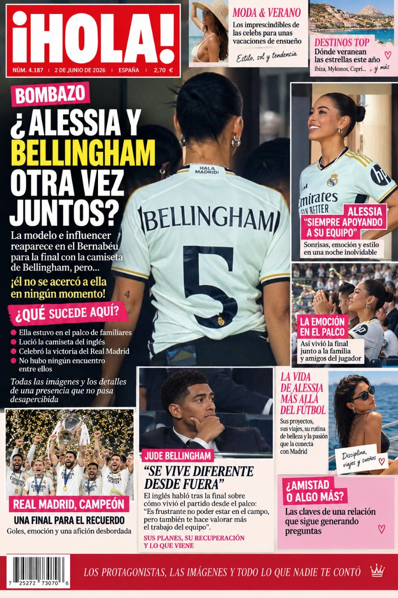
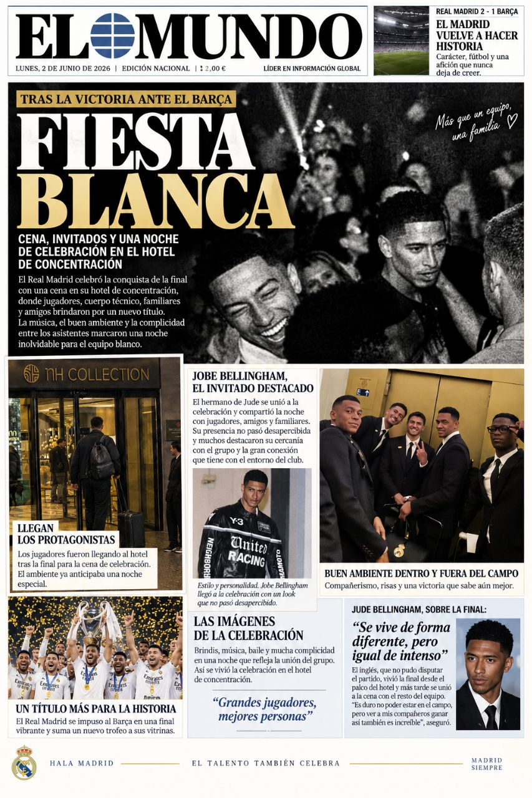
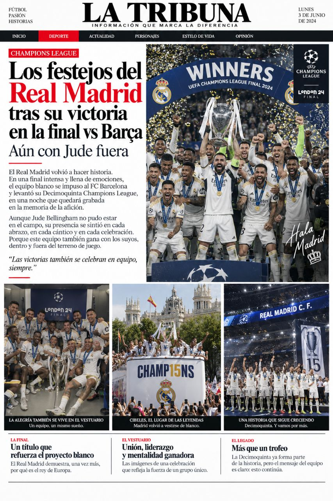
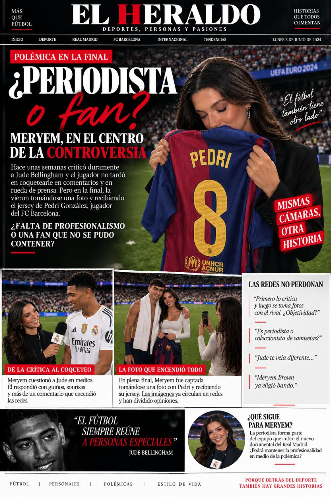
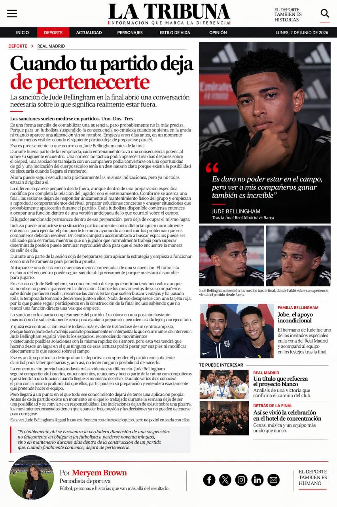

LA FINAL
Un título que refuerza el proyecto blanco
El equipo vuelve a celebrar una noche histórica. Jude siguió la final desde fuera y vivió el triunfo de una manera diferente.
LEER MÁS →Nuevas pistas, miradas sospechosas y demasiadas preguntas sin respuesta. La redacción de ETYG pone bajo la lupa los acontecimientos que todos están comentando.
Una historia puede cambiar completamente cuando aparecen nuevas piezas. Y esta vez, hay demasiadas coincidencias para ignorarlas.
LEER LA HISTORIA COMPLETA →El equipo vuelve a celebrar una noche histórica. Jude siguió la final desde fuera y vivió el triunfo de una manera diferente.
LEER MÁS →Cena, música, invitados y una celebración que se extendió mucho después del partido.
LEER MÁS →Más allá del trofeo, las imágenes dejaron ver la unión entre jugadores, amigos y familiares.
LEER MÁS →La presencia de Alessia en el palco volvió a generar especulaciones. Lo curioso: no hubo encuentro entre ambos.
LEER MÁS →La periodista que cuestionó a Jude vuelve a estar en el centro de la conversación. Esta vez, por una fotografía.
LEER MÁS →Las imágenes comenzaron a circular y las redes hicieron el resto. ¿Hay realmente algo detrás?
LEER MÁS →En ETYG no nos quedamos únicamente con la fotografía. Repasamos los hechos, las coincidencias y los detalles que podrían cambiar la interpretación de lo ocurrido.
Después de todo lo ocurrido… ¿tú qué crees?
Las portadas, titulares y polémicas que rodearon los acontecimientos. Cinco publicaciones. Cinco miradas. Una misma historia.

¿Alessia y Bellingham, otra vez juntos?
La portada que encendió las especulaciones.
Fiesta Blanca
Cena, invitados y una noche de celebración.
Los festejos del Real Madrid
Aún con Jude fuera, la celebración continuó.
¿Periodista o fan?
Meryem, en el centro de la controversia.
Cuando tu partido deja de pertenecerte
La suspensión de Jude abrió una conversación inesperada.